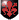

Mirodek Keleldur primo duello - Mase Vahn dal fruttivendolo e bangla
13:52 Mirodek [Via - Piazzale] Il passo dell’uomo è rapido e sicuro, il rumore degli stivali che battono sul terreno si mescola al ticchettio della pioggia che scivola ritmica sul cappuccio. La figura si erge imponente, un uomo che dimostra i quarant’anni, vicino ai centonovanta centimetri d’altezza. Non porta armi visibili né ornamenti: solo la semplicità ruvida di una camicia scura, pantaloni robusti e stivali consumati al punto giusto. A chiudere la sagoma, un mantello con cappuccio che vela in parte il volto, lasciando intravedere soltanto tratti decisi e maturi. La direzione è netta, il piazzale!
13:53 Keleldur [piazzale] è all'interno del piazzale, vestito della sua armatura da comandante, formata da placche ed anelli, un paio di pantaloni neri ed un paio di stivali eleganti che ne compongono la sua divisa. Ha un uncino argentato che gli adorna la mano destra al posto delle dita, ed uno scudo crociato legato allo stesso braccio mediante delle cinghie di pelle bruna che gli permettono di poterlo portare senza nessun impedimento. La maschera cerimoniale è tenuta sulla testa ma alta, visto che non sembra avere al momento nessuna necessità di farla calare sul suo volto. La mancina è guantata ed un medaglione gli pende dal collo raffiurante un teschio con una croce: Bramosia. Guarda i suoi uomini che al momento si stanno presidiando, e lui sembra essere semplicemente lì per questo, insieme agli altri
13:59 Mirodek
Mirodek  [Piazzale] [Il passo accelera, preciso come un pendolo. Nella mano una sigaretta corta è stretta quasi con affetto. Le dita la proteggono più dal gesto che dal vento. Inspira, il fumo esplode in una nuvoletta che si perde nell'aria umida. Gli occhi, freddi e fissi, scorrono fino a Keleldur e lo trovano. Il mantello scivola morbido sulle spalle mentre il passo si smorza, misura la distanza: non una esitazione, solo il calcolo di chi ha visto troppe cose per tremare ora. Gli altri uomini intorno si dissolvono in un campo visivo periferico, più che spettatori, testimoni. Un sospiro corto, come se quell'uomo davanti a lui fosse un capitolo inevitabile della sua vita.] Comandante Keleldur [La voce è chiara, bassa e priva di fronzoli, abbastanza vicina da farsi sentire, abbastanza controllata da non tradire il battito. Ultimo tiro: la cenere si spezza, un piccolo lancio del mozzicone che cade dietro le spalle, un gesto disadorno e definitivo. Si ferma, lo sguardo non cede. La scena resta sospesa]
[Piazzale] [Il passo accelera, preciso come un pendolo. Nella mano una sigaretta corta è stretta quasi con affetto. Le dita la proteggono più dal gesto che dal vento. Inspira, il fumo esplode in una nuvoletta che si perde nell'aria umida. Gli occhi, freddi e fissi, scorrono fino a Keleldur e lo trovano. Il mantello scivola morbido sulle spalle mentre il passo si smorza, misura la distanza: non una esitazione, solo il calcolo di chi ha visto troppe cose per tremare ora. Gli altri uomini intorno si dissolvono in un campo visivo periferico, più che spettatori, testimoni. Un sospiro corto, come se quell'uomo davanti a lui fosse un capitolo inevitabile della sua vita.] Comandante Keleldur [La voce è chiara, bassa e priva di fronzoli, abbastanza vicina da farsi sentire, abbastanza controllata da non tradire il battito. Ultimo tiro: la cenere si spezza, un piccolo lancio del mozzicone che cade dietro le spalle, un gesto disadorno e definitivo. Si ferma, lo sguardo non cede. La scena resta sospesa]
Mirodek [Piazzale] [Il passo accelera, preciso come un pendolo. Nella mano una sigaretta corta è stretta quasi con affetto. Le dita la proteggono più dal gesto che dal vento. Inspira, il fumo esplode in una nuvoletta che si perde nell'aria umida. Gli occhi, freddi e fissi, scorrono fino a Keleldur e lo trovano. Il mantello scivola morbido sulle spalle mentre il passo si smorza, misura la distanza: non una esitazione, solo il calcolo di chi ha visto troppe cose per tremare ora. Gli altri uomini intorno si dissolvono in un campo visivo periferico, più che spettatori, testimoni. Un sospiro corto, come se quell'uomo davanti a lui fosse un capitolo inevitabile della sua vita.] Comandante Keleldur [La voce è chiara, bassa e priva di fronzoli, abbastanza vicina da farsi sentire, abbastanza controllata da non tradire il battito. Ultimo tiro: la cenere si spezza, un piccolo lancio del mozzicone che cade dietro le spalle, un gesto disadorno e definitivo. Si ferma, lo sguardo non cede. La scena resta sospesa]14:09Keleldur
Keleldur 
[quando il suo nome viene espresso nella piazza le persone che gli sono intorno vengono solo guardate, ed per ogni sguardo che incrociano quelle pupille corvine c'è una risposta netta di evasione, come se fossero consapevoli. La risposta avviene dopo aver inspirato una bella boccata d'aria] Mirodek di Fengard, deduco [nemmeno l'ha ancora guardato per bene dopo essere stato chiamato, forse visto in precedenza, forse tenuto d'occhio da ben prima che lui immaginasse, ma questo non è altro che una congettura] Spero che il mio attendente non vi abbia arrecato disturbo per il vostro pasto di mezzodì [solo ora volge mezzo busto verso di lui, prendendo possesso di tutte le informazioni visive che può carpire dal fengardo] Pesa con cura le tue parole. Colui che hai di fronte è il Fu Pandemonio Nero, apice dei Vermigli che tu hai deciso per tue ragioni personali di sfidare incautamente. Ti concederò di spiegarmi, dopodichè deciderò [cosa verrà deciso non lo specifica. Il tono della voce rimane piuttosto pacato, mentre muove il passo verso un tavolinaccio dove c'è una spada rilegata in un fodero, accanto invece una di legno che viene lasciata per il momento lì. L'arma che viene presa è piuttosto robusta, una spada bastarda che probabilmente un cavaliere privo di una grande forza non riuscirebbe a maneggiare con una sola mano]14:16 Maseeri [piazzale] accanto a una bancarella sembra stia parlottando col gestore indicando diversi alimenti con precisione, un mantello nero la ripara dal tempo autunnale, di tanto in tanto si guarda in giro, abitudine consolidata, si avvede dei due guerrieri, alza le sopracciglia e le appare un sorrisetto divertito, quindi indica altre cose all’uomo della bancarella e gli domanda qualcosa all’orecchio, lo guarda annuire e indicare una cassa rovesciata accanto al banco, l’elfa vi si dirige prendendo dell’uva, si accomoda e intanto che aspetta che la spesa sia pronta si dedica ad osservare l’incontro fra i due, mangiucchiando la frutta
14:17Mirodek [Piazzale] [Il passo si arresta di netto, le mani raggiungono il cappuccio e lo calano lentamente, rivelando l’uomo nella sua interezza. Lo sguardo rimane fisso, duro, impenetrabile. La voce scivola ruvida, tagliente nel silenzio attorno.] Mirodek comandante. Ex Generale sotto il comandante Will, Stratigoto ed ex Alfiere Nero della Bianca. [Le parole portano con sé una punta di orgoglio, quasi una dichiarazione di rango inciso nella carne.] Nessun disturbo, anzi… non vedevo l’ora di fare la vostra conoscenza. [Un sospiro breve, come se la pazienza avesse finalmente trovato il suo sfogo.] Non avevo dubbi sul ricevere una vostra missiva. Per questo ho detto al Duca che avrei sfidato ogni rosso di Ghileas, pur di attirare attenzione. [Un mezzo sorriso a denti stretti incrina per un istante l’impassibilità.] Sapete anche il motivo per cui sono qui? Qui, a Ghileas? [Il corpo resta immobile, fermo come una statua di guerra; solo lo sguardo, acceso e vivo, resta in attesa.
Mirodek [Piazzale] [Il passo si arresta di netto, le mani raggiungono il cappuccio e lo calano lentamente, rivelando l’uomo nella sua interezza. Lo sguardo rimane fisso, duro, impenetrabile. La voce scivola ruvida, tagliente nel silenzio attorno.] Mirodek comandante. Ex Generale sotto il comandante Will, Stratigoto ed ex Alfiere Nero della Bianca. [Le parole portano con sé una punta di orgoglio, quasi una dichiarazione di rango inciso nella carne.] Nessun disturbo, anzi… non vedevo l’ora di fare la vostra conoscenza. [Un sospiro breve, come se la pazienza avesse finalmente trovato il suo sfogo.] Non avevo dubbi sul ricevere una vostra missiva. Per questo ho detto al Duca che avrei sfidato ogni rosso di Ghileas, pur di attirare attenzione. [Un mezzo sorriso a denti stretti incrina per un istante l’impassibilità.] Sapete anche il motivo per cui sono qui? Qui, a Ghileas? [Il corpo resta immobile, fermo come una statua di guerra; solo lo sguardo, acceso e vivo, resta in attesa.14:28Keleldur Non sono interessato alle cariche che hai ricoperto alla bianca. Ne ho un secchio pieno di quelle, eppure nessuna di esse, soprattutto quelle fengarde contano qualcosa..[una pausa] Qui..[dice guardandosi intorno con un sorriso che si amplifica mentre torna sulla figura dell'uomo] Curioso come tutti siano bramosi di conoscermi ultimamente. Vi rendo merito del fatto che abbiate avuto questo ardimento [dice inclinando la testa per studiarlo e pensare con cura alla risposta che subito poco dopo le sue labbra andranno ad esporre] Sto iniziando a pensare che vi sia un morbo che affligge alcune delle menti, poichè solo uno sciocco o un folle che desidera morire sfiderebbe tutti i rossi di Ghileas. Il cimitero fuori dalla città è pieno di gente che bramavano attenzione che gli è stata poi riservata. [sembra essere di buon umore per il momento, rivolgendo uno sguardo verso il luogo in cui Maseeri evidentemente dovrebbe essere] Sorprendimi...dimmi il motivo per cui sei qui. [gli concede, mentre osserva l'arma liberandola dal fodero che viene lasciato sul tavolino e rimessa per un momento lì a favore di quella di legno che viene afferrata]
Keleldur Non sono interessato alle cariche che hai ricoperto alla bianca. Ne ho un secchio pieno di quelle, eppure nessuna di esse, soprattutto quelle fengarde contano qualcosa..[una pausa] Qui..[dice guardandosi intorno con un sorriso che si amplifica mentre torna sulla figura dell'uomo] Curioso come tutti siano bramosi di conoscermi ultimamente. Vi rendo merito del fatto che abbiate avuto questo ardimento [dice inclinando la testa per studiarlo e pensare con cura alla risposta che subito poco dopo le sue labbra andranno ad esporre] Sto iniziando a pensare che vi sia un morbo che affligge alcune delle menti, poichè solo uno sciocco o un folle che desidera morire sfiderebbe tutti i rossi di Ghileas. Il cimitero fuori dalla città è pieno di gente che bramavano attenzione che gli è stata poi riservata. [sembra essere di buon umore per il momento, rivolgendo uno sguardo verso il luogo in cui Maseeri evidentemente dovrebbe essere] Sorprendimi...dimmi il motivo per cui sei qui. [gli concede, mentre osserva l'arma liberandola dal fodero che viene lasciato sul tavolino e rimessa per un momento lì a favore di quella di legno che viene afferrata]14:33 Vahn [piazzale - bancarella] lo sguardo di Keleldur, vagando nel luogo in cui Maseeri evidentemente dovrebbe essere, incontra invece il volto di Vahn mentre addenta svogliatamente un alchechengi arancione, preso alla stessa bancarella. Ha raggiunto sua sorella e fissa da lontano i due uomini, ma soprattutto il fu Pandemonio, assottigliando le palpebre mentre gusta il piccolo frutto acidulo.
14:34 Maseeri [piazzale – bancarella] si stringe un po’ sotto al tettuccio facendo sedere il fratello accanto a lei, continua a mangiucchiare uva “se ci prova lo fa secco” gli sussurra restando con un sorrisetto soddisfatto sul volo
14:36Mirodek [Piazzale] [Le braccia si incrociano al petto, il piede destro avanza leggermente, pronto a piantarsi a terra. Ascolta, deglutisce con calma, lo sguardo fermo.] Comandante, ho deciso di mettere radici a Ghileas. Comprare casa e andarci a vivere con la mia donna. [Un sorriso taglia le labbra, non quello di un generale in parata, ma di un uomo che parla chiaro.] Ho sempre combattuto, da quando avevo quindici anni: è una delle cose che mi riesce meglio. [Un sospiro greve spezza l’aria.] Mi metto alla prova anche qui, a Ghileas, tra i rossi. I miei titoli non sono niente: è l’assenza di paura che ha fatto di me ciò che sono. [Lo sguardo si fa più cupo, gli occhi due pozzi neri senza fondo.] Ho chiesto di sfidarvi per avere la vostra attenzione, ma… [inclina appena il capo, lasciando che lo sguardo abbracci chiunque sia a tiro.] Se ancora insistete con questa storia, sono qui. [Un’alzata di spalle, gesto semplice, con l’aria di chi la paura l’ha lasciata indietro da tempo.] Posso essere utile a questa città. Mettetemi alla prova, se lo desiderate.
Mirodek [Piazzale] [Le braccia si incrociano al petto, il piede destro avanza leggermente, pronto a piantarsi a terra. Ascolta, deglutisce con calma, lo sguardo fermo.] Comandante, ho deciso di mettere radici a Ghileas. Comprare casa e andarci a vivere con la mia donna. [Un sorriso taglia le labbra, non quello di un generale in parata, ma di un uomo che parla chiaro.] Ho sempre combattuto, da quando avevo quindici anni: è una delle cose che mi riesce meglio. [Un sospiro greve spezza l’aria.] Mi metto alla prova anche qui, a Ghileas, tra i rossi. I miei titoli non sono niente: è l’assenza di paura che ha fatto di me ciò che sono. [Lo sguardo si fa più cupo, gli occhi due pozzi neri senza fondo.] Ho chiesto di sfidarvi per avere la vostra attenzione, ma… [inclina appena il capo, lasciando che lo sguardo abbracci chiunque sia a tiro.] Se ancora insistete con questa storia, sono qui. [Un’alzata di spalle, gesto semplice, con l’aria di chi la paura l’ha lasciata indietro da tempo.] Posso essere utile a questa città. Mettetemi alla prova, se lo desiderate.Adema ti sussurra: aspetta ad azionare dopo kel ahah
Vahn sussurra a Adema: ok ahahah
14:52Keleldur Sarete cittadino di Ghileas nessuno ve lo impeditrà di certo. Per chi cerca un luogo che vuole chiamare casa, e troverai in esse delle solide mura che ti permetteranno di dormire senza avere una spada sotto al letto [dice mentre osserva Vahn. Assottiglia lo sguardo, alzando il mento come se in quello sguardo che si aggrappa a lui ci fosse ben più di una frase che viene trasmessa, in un silenzio che non lascia intendere nulla, ma esplicativo di tutto] Voi non conoscete affatto i rossi di Ghileas Mirodek. E' la paura che muove i rossi nella prima linea. Perchè quando le retrovie saranno lontane una decina di metri e si staglierà un esercito intero di fronte ad un esiguo numero di uomini è solo la paura che può essere presa, usata come un arma e utilizzata per essere considerati i più sanguinari e pericolosi combattenti del regno. E' questo che ci differenzia, è questo per cui siamo temuti. L'assenza di paura sfiora la semplice follia e l'inadeguatezza di un avversario mentre ci si nasconde dietro migliaia di uomini[ parla con calma ma i suoi contenuti sono ben marcati, rimanendo nella sua posizione per il momento] Vuoi essere un vermiglio? Ti metto alla prova allora [lo dice mentre la spada di legno viene letteralmente gettata ai suoi piedi facendo un arco che si disegna nell'aria e ricade nelle sue disponibiltà] Scegli come affrontare il tuo Nemico, se come Mirodek Di Ghileas, anello di prova dei Combattenti, utilizzando ogni tua arma che ti aggrada, ogni tuo orpello ed ogni tua protezione. [guarda Maseeri e Vahn di nuovo, lasciando che la maschera cerimoniale che ricada sul suo volto, proteggendolo e mascherandone i lineamenti. La spada bastarda infine viene impugnata come un coltello, in retroversione, mettendo lo scudo di fronte e flettendo leggermente le gambe] Oppure prendi quella fottuta spada di legno, privo di ogni tuo arnese ed affrontami come un Vermiglio..come una prima linea che conosce di essere in netto svantaggio ma nonostante questo attacca comunque, perchè il suo ideale è più forte di ogni avversario, a prescindere da chi sia. E sono io quest'oggi. [termina, mentre attende il responso]
Keleldur Sarete cittadino di Ghileas nessuno ve lo impeditrà di certo. Per chi cerca un luogo che vuole chiamare casa, e troverai in esse delle solide mura che ti permetteranno di dormire senza avere una spada sotto al letto [dice mentre osserva Vahn. Assottiglia lo sguardo, alzando il mento come se in quello sguardo che si aggrappa a lui ci fosse ben più di una frase che viene trasmessa, in un silenzio che non lascia intendere nulla, ma esplicativo di tutto] Voi non conoscete affatto i rossi di Ghileas Mirodek. E' la paura che muove i rossi nella prima linea. Perchè quando le retrovie saranno lontane una decina di metri e si staglierà un esercito intero di fronte ad un esiguo numero di uomini è solo la paura che può essere presa, usata come un arma e utilizzata per essere considerati i più sanguinari e pericolosi combattenti del regno. E' questo che ci differenzia, è questo per cui siamo temuti. L'assenza di paura sfiora la semplice follia e l'inadeguatezza di un avversario mentre ci si nasconde dietro migliaia di uomini[ parla con calma ma i suoi contenuti sono ben marcati, rimanendo nella sua posizione per il momento] Vuoi essere un vermiglio? Ti metto alla prova allora [lo dice mentre la spada di legno viene letteralmente gettata ai suoi piedi facendo un arco che si disegna nell'aria e ricade nelle sue disponibiltà] Scegli come affrontare il tuo Nemico, se come Mirodek Di Ghileas, anello di prova dei Combattenti, utilizzando ogni tua arma che ti aggrada, ogni tuo orpello ed ogni tua protezione. [guarda Maseeri e Vahn di nuovo, lasciando che la maschera cerimoniale che ricada sul suo volto, proteggendolo e mascherandone i lineamenti. La spada bastarda infine viene impugnata come un coltello, in retroversione, mettendo lo scudo di fronte e flettendo leggermente le gambe] Oppure prendi quella fottuta spada di legno, privo di ogni tuo arnese ed affrontami come un Vermiglio..come una prima linea che conosce di essere in netto svantaggio ma nonostante questo attacca comunque, perchè il suo ideale è più forte di ogni avversario, a prescindere da chi sia. E sono io quest'oggi. [termina, mentre attende il responso]Da uno dei viottoli laterali della piazza spunta un ometto basso e un po' trasandato, giacca lisa e capelli arruffati, odora di spezie orientali, ma il volto è segnato da rughe bonarie e occhi colmi di gentilezza. Nelle mani stringe un mezzo fresco di gigli bianchi, che profumano intensamente. Si fa spazio tra i vari passanti e avventori della piazza, scivolando verso i sussurri, solleva i fiori in direzione di Vahn e Maseeri, proponendo con voce dialettale: "Beli fiori per beli signori? Venti gilli per tutto mazo"
14:57 Maseeri [piazzale – bancarella] nota l’uomo con i gigli e gli fa cenno di no “no grazie, sono allergica” fa due o tre starnuti fintissimi e indica Vahn come possibile interlocutore del buon uomo
14:59 Vahn [piazzale - bancarella] sostiene lo sguardo di Keleldur, decapitando un secondo alchechengi, tenendolo per le foglie verdi secche con due dita e staccando la succosa e acidula testa del piccolo frutto con gli incisivi. Mastica lentamente, ascoltando le parole del Comandante con un concentrato di rispetto e febbricitante attesa. Annuisce a Maseeri, accanto a lui, per poi distrarsi un attimo. Forse sente un profumo di gigli, e infatti si volta verso l’ometto che giunge. Gli si avvicina, salutandolo con un cenno gentile del capo ed ammirando i fiori. Mette una mano in tasca ed estrae un sacchettino di lino chiaro, che porge all’uomo. “Contate e prendete venti gigli voi, buon uomo. Io non posso più toccare moneta.”
15:07Mirodek [Piazzale] Veniamo da posti e scuole accademiche diverse. [Il tono è calmo, ma qualcosa nel volto si incrina, gli occhi si chiudono per un istante mentre annusi l’odore della pioggia.] Ho visto uomini, più alti e più forti di me, pisciarsi addosso, praticamente incatenati dalla paura. Risultato? [fa spallucce] morti. Ed io sono qui davanti a voi, dopo centinaia di guerre. [Sorride, lo sguardo scivola sulla spada, il cuore in petto batte, un tamburo antico che riaccende un istinto noto anche se l’arma è di legno. Si china, la afferra con naturalezza.] Così sia. [Sfila il mantello con un gesto rapido, lo getta a terra accanto a sé. Si sistema, assume la posizione: il piede destro avanti, il corpo leggermente caricato, le braccia pronte. La spada di legno gira un paio di volte nel polso come se fosse parte del braccio, il movimento è fluido, preciso, abitudine incisa nelle ossa. Con lo sguardo cerca uno spiraglio nella guardia, i muscoli si tendono: il respiro si fa misurato, il tempo sembra rallentare. Lo scatto arriva: la lama fende l’aria con un sibilo contenuto, la traiettoria è studiata per ingannare e aprire, è un gesto vecchio quanto la guerra, una promessa di morte appena suggerita. Con un movimento che è tutto calcolo e istinto, il busto accenna una discesa, la spalla sinistra si apre in una finta studiata per abbassare la guardia dell’avversario. Poi, allo scopo di cogliere la vera apertura, il peso va sul piede avanzato, il polso fa quel piccolo giro che spezza i tempi della difesa. La punta corre: una linea diretta, mirata alla giunzione sotto la mandibola, la base del collo la traiettoria ideale e letale.
Mirodek [Piazzale] Veniamo da posti e scuole accademiche diverse. [Il tono è calmo, ma qualcosa nel volto si incrina, gli occhi si chiudono per un istante mentre annusi l’odore della pioggia.] Ho visto uomini, più alti e più forti di me, pisciarsi addosso, praticamente incatenati dalla paura. Risultato? [fa spallucce] morti. Ed io sono qui davanti a voi, dopo centinaia di guerre. [Sorride, lo sguardo scivola sulla spada, il cuore in petto batte, un tamburo antico che riaccende un istinto noto anche se l’arma è di legno. Si china, la afferra con naturalezza.] Così sia. [Sfila il mantello con un gesto rapido, lo getta a terra accanto a sé. Si sistema, assume la posizione: il piede destro avanti, il corpo leggermente caricato, le braccia pronte. La spada di legno gira un paio di volte nel polso come se fosse parte del braccio, il movimento è fluido, preciso, abitudine incisa nelle ossa. Con lo sguardo cerca uno spiraglio nella guardia, i muscoli si tendono: il respiro si fa misurato, il tempo sembra rallentare. Lo scatto arriva: la lama fende l’aria con un sibilo contenuto, la traiettoria è studiata per ingannare e aprire, è un gesto vecchio quanto la guerra, una promessa di morte appena suggerita. Con un movimento che è tutto calcolo e istinto, il busto accenna una discesa, la spalla sinistra si apre in una finta studiata per abbassare la guardia dell’avversario. Poi, allo scopo di cogliere la vera apertura, il peso va sul piede avanzato, il polso fa quel piccolo giro che spezza i tempi della difesa. La punta corre: una linea diretta, mirata alla giunzione sotto la mandibola, la base del collo la traiettoria ideale e letale.Mirodek ha attaccato Keleldur ma il colpo è stato parato. efficienza 61 caso 87
15:25Keleldur Nessuno di loro però aveva un giglio sul petto, nessuno di loro era un anello di una catena inattaccabile. Nessuno, finchè io avrò respiro dovrà temere di essere solo ed arrendersi alla paura. Le tue guerra ti daranno e ti danno l'esperienza senza alcun dubbio. Verrai modellato, verrai fatto diventare un vermiglio con il tempo, ed ogni tua parola sarà rintocco per ogni altro tuo avversario, così come ogni tuo colpo sarà per difendere l'anello che hai al tuo fianco, come tuo pari, come un tuo familiare. Con la paura di perderlo [di nuovo verso Vahn e Maseeri, come se in un qualche modo si accertasse di qualcosa. Inspira prima di ritrovarsi ad osservare le movenze di Mirodek e da sotto la maschera il sorriso si amplifica, lasciando che una risata più inquieta si dipani nel piazzale]Molto bene...La scelta che mi aspettavo[ dopotutto sapeva che avrebbe stuzzicato con le sue parole, provocandolo volontariamente. La sua guardia gli permette di poter vedere Mirodek arrivare insieme al puntale della sua arma che tenta di raggiungerlo] Bel tentativo, così si combatte in guerra. Mirando a dei punti vitali senza pietà [dice con una favella piuttosto veloce, dopo aver dato un colpetto con la parte più alta dello scudo che lo difende frontalmente, in modo tale che il colpo non lo raggiunga affatto ma che impatti soltanto nel ferro sacro che porta al braccio destro.Dopo questo la difesa si apre del tutto, facendo un ampio raggio che torge il busto e permette alla parte sinistra, quella armata di avere più spazio di manovra con la spada tenuta come un pugnale. Il braccio si alza verso l'alto per poi ricalare velocemente verso il basso verso la coscia dell'ex comandante, nel tentativo di affondargli la punta della spada nella coscia. La forza che viene esercitata non è evidentemente uno scherzo. Il comandante sta combattendo davvero, non è un allenamento. Solo la torsione del polso nel colpo che viene fatto vibrare può dare l'impressione ad un occhio esperto che non c'è volontà di perforarlo da parte a parte , ma nel caso trovasse l'obbiettivo scivolerebbe di lato]
Keleldur Nessuno di loro però aveva un giglio sul petto, nessuno di loro era un anello di una catena inattaccabile. Nessuno, finchè io avrò respiro dovrà temere di essere solo ed arrendersi alla paura. Le tue guerra ti daranno e ti danno l'esperienza senza alcun dubbio. Verrai modellato, verrai fatto diventare un vermiglio con il tempo, ed ogni tua parola sarà rintocco per ogni altro tuo avversario, così come ogni tuo colpo sarà per difendere l'anello che hai al tuo fianco, come tuo pari, come un tuo familiare. Con la paura di perderlo [di nuovo verso Vahn e Maseeri, come se in un qualche modo si accertasse di qualcosa. Inspira prima di ritrovarsi ad osservare le movenze di Mirodek e da sotto la maschera il sorriso si amplifica, lasciando che una risata più inquieta si dipani nel piazzale]Molto bene...La scelta che mi aspettavo[ dopotutto sapeva che avrebbe stuzzicato con le sue parole, provocandolo volontariamente. La sua guardia gli permette di poter vedere Mirodek arrivare insieme al puntale della sua arma che tenta di raggiungerlo] Bel tentativo, così si combatte in guerra. Mirando a dei punti vitali senza pietà [dice con una favella piuttosto veloce, dopo aver dato un colpetto con la parte più alta dello scudo che lo difende frontalmente, in modo tale che il colpo non lo raggiunga affatto ma che impatti soltanto nel ferro sacro che porta al braccio destro.Dopo questo la difesa si apre del tutto, facendo un ampio raggio che torge il busto e permette alla parte sinistra, quella armata di avere più spazio di manovra con la spada tenuta come un pugnale. Il braccio si alza verso l'alto per poi ricalare velocemente verso il basso verso la coscia dell'ex comandante, nel tentativo di affondargli la punta della spada nella coscia. La forza che viene esercitata non è evidentemente uno scherzo. Il comandante sta combattendo davvero, non è un allenamento. Solo la torsione del polso nel colpo che viene fatto vibrare può dare l'impressione ad un occhio esperto che non c'è volontà di perforarlo da parte a parte , ma nel caso trovasse l'obbiettivo scivolerebbe di lato]Keleldur ha colpito Mirodek causando 14 punti ferita. efficienza 90 caso 55
L'ometto sgrana gli occhi quasi incredulo, esita un attimo poi con mezzo sorriso imbarazzato afferra il sacchetto e lo pesa con mano tremante. Senza farsi troppe domande sulla frase enigmatica del bardo, inizia a contare le monete con goffa rapidità, le stringe a se e porge il mazzo di gigli a Vahn con un inchino. Sorridendo conclude: "grasie capo, venti gilli per venti volte amore con tu moglie, ma ricorda amigo, lei no incinta, sacre scritture dicono che chi bomba donna incinta rimane anche lui incinta" e nella serietà della piazza che era rimasta col fiato sospeso per lo scontro tra Keleldur e Mirodek, qualcuno sbotta in una risata attorno alla bancarella, alleggerendo la situazione.
15:34 Maseeri [piazzale – bancarella] guarda l’ometto dei gigli e lentamente alza una mano indicando vagamente la direzione della locanda “per le donne incinta da quella parte” sentenzia mettendosi un acino in bocca poi piega la testa verso il fratello e mormora “prima ho visto chi tu sai vicino al banco del pesce, pensi che stia pensando a quale ricetta scegliere?” detto questo torna a guardare i due con aria pigra ma con lo sguardo verde che danza fra Mirodek e Keleldur, attento, soffermandosi un po’ di più sul Comandante
15:37 Vahn [piazzale - bancarella] sorride anche lui alle parole dell'uomo, prendendo il mazzo di gigli in mano. "ehi...questa mica l'avrai sentita da un pirata alto piú o meno cosí, biondo e con gli occhi blu, nevvero?" Chiede con tono leggero ma una luce vagamente ansiosa negli occhi, mentre annusa distrattamente un giglio. Il clangore del legno contro il metallo, poi, lo distoglie da quella conversazione. Saluta l’ometto con un cenno di ringraziamento, dopo aver ripreso il sacchettino con il resto, e torna in silenzio ad osservare lo scontro. Si tiene a qualche passo da Maseeri ora e sopravvento, così da non farle arrivare l’odore di gigli addosso. Le lancia uno sguardo liquido e un sorriso divertito e furbo, a mo di risposta al dire di lei. Lui, bianco tra i bianchi fiori. Poi i suoi occhi tornano a seguire dai margini quel duello. Il cantore, con quel mazzo di candidi gigli in mano e l’aria assorta, sembrerebbe uno di quegli angeli che, pieni di una severa pietà, attendono silenziosi l’ultimo respiro dei perduti e dei moribondi rimasti sui campi di battaglia.
15:37Mirodek [Piazzale] [Il colpo di legno viene deviato con decisione, abbastanza da lasciare scoperto l’ex Generale per un battito d’occhio. Keleldur ne approfitta: la spada scatta e punta alla gamba. L’uomo vede arrivare l’affondo, ritrae d’istinto la destra, ma la punta lo raggiunge comunque. Il tessuto del pantalone si apre, il quadricipite viene inciso e il sangue scivola di lato lungo la coscia. Il dolore accende la ferocia. Le labbra si piegano in un sussurro appena percettibile, più per se stesso che per gli altri] tutto qui? [La ferita non lo piega, anzi: lo carica come brace che diventa incendio. Si pianta sulla gamba sinistra, usando la destra sanguinante solo come supporto. Le spalle si tendono, il busto si torce, il braccio sinistro libero si carica in basso come un arco pronto a liberare tutta la sua forza. Gli occhi restano fissi sull’avversario, la traiettoria già tracciata: il mento del comandante, la parte meno coperta. Con un gesto che unisce rabbia e istinto, il montante parte come una scarica brutale, una bestia che esplode all’improvviso.]
Mirodek [Piazzale] [Il colpo di legno viene deviato con decisione, abbastanza da lasciare scoperto l’ex Generale per un battito d’occhio. Keleldur ne approfitta: la spada scatta e punta alla gamba. L’uomo vede arrivare l’affondo, ritrae d’istinto la destra, ma la punta lo raggiunge comunque. Il tessuto del pantalone si apre, il quadricipite viene inciso e il sangue scivola di lato lungo la coscia. Il dolore accende la ferocia. Le labbra si piegano in un sussurro appena percettibile, più per se stesso che per gli altri] tutto qui? [La ferita non lo piega, anzi: lo carica come brace che diventa incendio. Si pianta sulla gamba sinistra, usando la destra sanguinante solo come supporto. Le spalle si tendono, il busto si torce, il braccio sinistro libero si carica in basso come un arco pronto a liberare tutta la sua forza. Gli occhi restano fissi sull’avversario, la traiettoria già tracciata: il mento del comandante, la parte meno coperta. Con un gesto che unisce rabbia e istinto, il montante parte come una scarica brutale, una bestia che esplode all’improvviso.]Mirodek ha colpito Keleldur causando 3 punti ferita. efficienza 61 caso 19
15:50Keleldur Apprendi [dice verso di lui da sotto la sua maschera che gli nasconde il viso] Ogni gesto [dice verso di lui vedendo la sua reazione al colpo e quanto esso lo abbia ferito davvero, senza però avere pietà alcuna per lui] Con me non funziona Mirodek. Questa è la tua prima volta contro un Vermiglio. Impara ad esserlo in tutto. Diventa un anello di catena e sarai più forte di quanto tu non sia mai stato [lo invita ad un nuovo colpo ed il montante che il fengardiano propone viene visto ma la punta della spada di legno gli tira via la maschera, rivelando così i suoi lineamenti ed il capelli corvini che ricadono ora sul volto] E' finita. [sentenzia verso di lui, come un rintocco di morte che il colpo precedente di Mirodek sembra essere come preludio preparatorio al colpo dove Keleldur voleva arrivare. Dopo aver lasciato scivolare via il montante seppur adesso la protezione del volto sia caduta a terra nei dintorni il corpo si flette indietro, facendo roteare il polso in modo da mettere la punta della spada orizzontalmente. Lo scudo si porta di nuovo davanti al petto muovendo il braccio per racchiudersi ed il pomo della spada viene appoggiata come fosse una lancia di fronte ad esso, caricando in avanti per affondare nel suo costato destro con tutta la forza che entrambe le braccia potrebbero esprimere ed esplodere nei confronti del suo avversario]
Keleldur Apprendi [dice verso di lui da sotto la sua maschera che gli nasconde il viso] Ogni gesto [dice verso di lui vedendo la sua reazione al colpo e quanto esso lo abbia ferito davvero, senza però avere pietà alcuna per lui] Con me non funziona Mirodek. Questa è la tua prima volta contro un Vermiglio. Impara ad esserlo in tutto. Diventa un anello di catena e sarai più forte di quanto tu non sia mai stato [lo invita ad un nuovo colpo ed il montante che il fengardiano propone viene visto ma la punta della spada di legno gli tira via la maschera, rivelando così i suoi lineamenti ed il capelli corvini che ricadono ora sul volto] E' finita. [sentenzia verso di lui, come un rintocco di morte che il colpo precedente di Mirodek sembra essere come preludio preparatorio al colpo dove Keleldur voleva arrivare. Dopo aver lasciato scivolare via il montante seppur adesso la protezione del volto sia caduta a terra nei dintorni il corpo si flette indietro, facendo roteare il polso in modo da mettere la punta della spada orizzontalmente. Lo scudo si porta di nuovo davanti al petto muovendo il braccio per racchiudersi ed il pomo della spada viene appoggiata come fosse una lancia di fronte ad esso, caricando in avanti per affondare nel suo costato destro con tutta la forza che entrambe le braccia potrebbero esprimere ed esplodere nei confronti del suo avversario]Keleldur ha colpito Mirodek causando 14 punti ferita. efficienza 90 caso 55
15:59Mirodek [Piazzale] [Il montante sfiora appena, abbastanza da strappar via la maschera dal volto di Keleldur. La mascella dell’ex Generale si serra, divisa tra la rabbia del colpo non andato a segno e la fitta che gli lacera la gamba destra.] C’è sempre da imparare comandante [ringhia tra i denti, lo sguardo che non si stacca dall’avversario mentre lo vede prepararsi al contrattacco. La distanza è ravvicinata, non c’è scudo né difesa che lo protegga: resta solo l’istinto. Il busto arretra piegandosi a sinistra, il movimento è rapido, ma non basta a sottrarsi. La lama lo raggiunge ancora, lo apre di nuovo: il sangue scende subito, abbondante, e va a unirsi a quello già colato dalla coscia, gocciolando al suolo come la pioggia stessa. Il respiro si fa greve, il dolore accende la fronte di sudore, ma la ferocia non cede. Mentre Keleldur ritrae la spada, l’uomo sfrutta la distanza ravvicinata e scatta con un colpo improvviso, privo di armi: la testa che prova ad abbattersi con violenza, diretta al naso ormai privo di protezione. Tenta così una testata brutale, carica di rabbia e furia cieca.]
Mirodek [Piazzale] [Il montante sfiora appena, abbastanza da strappar via la maschera dal volto di Keleldur. La mascella dell’ex Generale si serra, divisa tra la rabbia del colpo non andato a segno e la fitta che gli lacera la gamba destra.] C’è sempre da imparare comandante [ringhia tra i denti, lo sguardo che non si stacca dall’avversario mentre lo vede prepararsi al contrattacco. La distanza è ravvicinata, non c’è scudo né difesa che lo protegga: resta solo l’istinto. Il busto arretra piegandosi a sinistra, il movimento è rapido, ma non basta a sottrarsi. La lama lo raggiunge ancora, lo apre di nuovo: il sangue scende subito, abbondante, e va a unirsi a quello già colato dalla coscia, gocciolando al suolo come la pioggia stessa. Il respiro si fa greve, il dolore accende la fronte di sudore, ma la ferocia non cede. Mentre Keleldur ritrae la spada, l’uomo sfrutta la distanza ravvicinata e scatta con un colpo improvviso, privo di armi: la testa che prova ad abbattersi con violenza, diretta al naso ormai privo di protezione. Tenta così una testata brutale, carica di rabbia e furia cieca.]Mirodek ha attaccato Keleldur ma il colpo è stato parato. efficienza 61 caso 76
16:03 Vahn [piazzale - bancarella] ha uno sguardo assorto, si, ma nelle profonde acque della contemplazione. Avvolto nel profumo dei gigli, l’elfo sta seguendo con attenzione estrema i movimenti dei due combattenti. Ne registra le torsioni, gli scatti e le attese. Segue le parabole delle armi come se disegnassero nell’aria curve antiche, ricalcando forse qualche polverosa traccia nella lontana memoria del bardo. Non trasale al sangue che scorre, ne’ alle espressioni di dolore e rabbia sul volto di Mirodek. Non si rifugia dalla spaventosa e spietata smorfia sul volto di Keleldur quando la sua maschera d’osso vola via. Il ventunesimo giglio di quel mazzo di fiori sembra che rivolga la severità dei suoi occhi più a se stesso, che a loro. Come se ritrovasse in quel loro combattere un’immagine di un suo lontano passato, o del più prossimo futuro.
16:05 Maseeri [piazzale – bancarella] sospira scuotendo il capo e appoggia i resti del grappolo speluccato “Povera Elanoer, dovrà rappezzarlo tutto” mormora continuando a guardare lo scontro senza sembrare turbata dall’uomo ferito né dalla rabbia sprigionata dai due.. quasi fosse avvezza “sembra di tornare ai vecchi tempi” mormora ancora prima di continuare a seguire i due
16:15Keleldur [quando il suo colpo raggiunge Mirodek la soddisfazione sembra farsi largo in un sorriso ben ampio che riempie di quell'adrenalina e quella voglia di offendere il fisico altriui, appagandolo. Scorge il colpo arrivare, ma si si tira indietro abbastanza per fare in modo che il suo busto rimanga lontano, sfruttando lo scudo e solo le due fronti si sfiorano senza dare nessun fastidio al comandante] Apprezzo i tuoi Gesti Mirodek [una pausa] Di ghileas [dice mentre torna con le ginocchia in posizione eretta, come se avesse decretato la fine del combattimento di fatto] Accolgo la tua richiesta di dimostrare il tuo intento. Entrerai come Combattente dei senza re...MA[si dipinge un sorriso più maligno in lui, tornando a guardare le stelle erranti] Dovrai passare almeno sette soli e sette lune sfruttando la compagnia di loro due. Da loro come una spugna ti caricherai dei valori che ancora non conosci e che pian piano ti daranno modo attraverso le loro parole di poter diventare un anello di catena, di conoscere ogni singola persona che dovrai difendere, affinchè la tua arma potrà essere salda in ogni colpo che sentenzierai. E sarà per loro, ognuno di essi. Combatti così e non perderai mai[ solo ora inspira, ed un rivolo di sudore gli scorre lungo la fronte, scivolando sulla guancia] Vai in accademia e fatti curare da Elanoer. Sarai suo pari. Non ho avuto modo di incontrarla ma sappi che lei è a tutti gli effetti un cavaliere [guarda lo scudo, muovendo il braccio per capire un pò il perchè di quella stanchezza] Non sono abituato ad usare questo gingillo..maledizione [borbotta] Ah..benvenuto a Ghileas Mirodek, e Benvenuto nei Csr [lo dice mentre carica il braccio sinistra, nel tentativo di dargli un pugno nel naso, dritto, senza compiere archi, tenendo sempre il pomo della spada in retroversione, permettendogli quindi di poterlo fare senza troppi inghippi]
Keleldur [quando il suo colpo raggiunge Mirodek la soddisfazione sembra farsi largo in un sorriso ben ampio che riempie di quell'adrenalina e quella voglia di offendere il fisico altriui, appagandolo. Scorge il colpo arrivare, ma si si tira indietro abbastanza per fare in modo che il suo busto rimanga lontano, sfruttando lo scudo e solo le due fronti si sfiorano senza dare nessun fastidio al comandante] Apprezzo i tuoi Gesti Mirodek [una pausa] Di ghileas [dice mentre torna con le ginocchia in posizione eretta, come se avesse decretato la fine del combattimento di fatto] Accolgo la tua richiesta di dimostrare il tuo intento. Entrerai come Combattente dei senza re...MA[si dipinge un sorriso più maligno in lui, tornando a guardare le stelle erranti] Dovrai passare almeno sette soli e sette lune sfruttando la compagnia di loro due. Da loro come una spugna ti caricherai dei valori che ancora non conosci e che pian piano ti daranno modo attraverso le loro parole di poter diventare un anello di catena, di conoscere ogni singola persona che dovrai difendere, affinchè la tua arma potrà essere salda in ogni colpo che sentenzierai. E sarà per loro, ognuno di essi. Combatti così e non perderai mai[ solo ora inspira, ed un rivolo di sudore gli scorre lungo la fronte, scivolando sulla guancia] Vai in accademia e fatti curare da Elanoer. Sarai suo pari. Non ho avuto modo di incontrarla ma sappi che lei è a tutti gli effetti un cavaliere [guarda lo scudo, muovendo il braccio per capire un pò il perchè di quella stanchezza] Non sono abituato ad usare questo gingillo..maledizione [borbotta] Ah..benvenuto a Ghileas Mirodek, e Benvenuto nei Csr [lo dice mentre carica il braccio sinistra, nel tentativo di dargli un pugno nel naso, dritto, senza compiere archi, tenendo sempre il pomo della spada in retroversione, permettendogli quindi di poterlo fare senza troppi inghippi]Keleldur ha colpito con un pugno Mirodek causando 15 punti ferita. Efficienza 82 caso 25
16:25Mirodek [Piazzale] [La mano corre istintiva al costato, scivola sulla ferita per saggiarne la profondità. Le dita affondano appena, il sangue caldo le ricopre lente, mischiandosi a quello già colato dalla gamba. L’ex Generale osserva la mano arrossata, completamente tinta di rosso.] Ecco [mormora tra un sorriso sudato e la fiamma che ancora lo tiene vivo] i colori che imparerò a difendere. [La frase è chiara, dedicata ai Rossi di Ghileas. Le parole di Keleldur giungono, e nel sentir nominare Elanoer il volto si rilassa per un istante, un sorriso breve e affaticato. Vorrebbe replicare al benvenuto, ma il colpo lo coglie distratto, senza difesa: il naso scricchiola sotto l’impatto, il sangue gli scende immediato sulle labbra e lungo la gola. Un grido soffocato, un mugolio stretto tra i denti, senza concedere al dolore di trasformarsi in lamento.] Cazzo [sbotta, indietreggiando di un passo, la mano a controllare le ossa del setto. Gli occhi si sollevano, feroci, incrollabili.] Keleldur, questo è solo l’inizio. [La furia non accenna a spegnersi. Getta a terra la spada di legno con gesto secco, poi solleva il volto al cielo, lasciando che la pioggia si mescoli al sangue per portarlo via.] Ah amore mio, avrai da lavorare anche stasera [ sussurra con un sorriso obliquo, amaro eppure compiaciuto. È il risultato che attendeva: dolore, sangue, prova. Quella che lo conferma ancora vivo.
Mirodek [Piazzale] [La mano corre istintiva al costato, scivola sulla ferita per saggiarne la profondità. Le dita affondano appena, il sangue caldo le ricopre lente, mischiandosi a quello già colato dalla gamba. L’ex Generale osserva la mano arrossata, completamente tinta di rosso.] Ecco [mormora tra un sorriso sudato e la fiamma che ancora lo tiene vivo] i colori che imparerò a difendere. [La frase è chiara, dedicata ai Rossi di Ghileas. Le parole di Keleldur giungono, e nel sentir nominare Elanoer il volto si rilassa per un istante, un sorriso breve e affaticato. Vorrebbe replicare al benvenuto, ma il colpo lo coglie distratto, senza difesa: il naso scricchiola sotto l’impatto, il sangue gli scende immediato sulle labbra e lungo la gola. Un grido soffocato, un mugolio stretto tra i denti, senza concedere al dolore di trasformarsi in lamento.] Cazzo [sbotta, indietreggiando di un passo, la mano a controllare le ossa del setto. Gli occhi si sollevano, feroci, incrollabili.] Keleldur, questo è solo l’inizio. [La furia non accenna a spegnersi. Getta a terra la spada di legno con gesto secco, poi solleva il volto al cielo, lasciando che la pioggia si mescoli al sangue per portarlo via.] Ah amore mio, avrai da lavorare anche stasera [ sussurra con un sorriso obliquo, amaro eppure compiaciuto. È il risultato che attendeva: dolore, sangue, prova. Quella che lo conferma ancora vivo.16:28 Maseeri [piazzale – bancarella] si muove come se intuisse che la disputa è alla fine poi si ferma “senza nemmeno un pugno?” borbotta perplessa tornando a guardare i due poi vede l’ultima azione del Comandante e con un sorriso aggiunge “ah ecco, ora sono amici” torna quindi a guardare la bancarella e chiede di aggiungere un paio di cose alla spesa
16:30 Vahn [piazzale - bancarella] si scuote appena, riemergendo dal lago dei suoi pensieri. Sposta gli occhi su Maseeri, rispondendole solo dopo quel lungo silenzio. "Proprio come ai vecchi tempi." conferma, con un mezzo sorriso e una luce determinata negli occhi, come una vecchia brace che dopo anni ha ripreso a bruciare. Lancia un'ultima occhiata ai due combattenti, poi si avvicina alla sorella davanti alla bancarella. “Vado a portare questi a Mad.” Le dice con un tono piú leggero. Le sorride con gli occhi “ti faccio sapere per stasera. Grazie” la saluta con affetto, e poi farebbe per allontanarsi in direzione del cimitero.
16:31Keleldur [un cenno di assenso a Mirodek raccogliendo la maschera e rimettendola sul capo solo come appoggio ma senza celarlo, osservandolo ferito ma ancora in piedi. Dopotutto sapeva che sarebbe stato uno scontro impari. La spada verrà rimessa sul tavolinaccio, dove il suo attendente provvederà a pulirla e rimetterla dove deve. Gli occhi saettano verso Vahn, indicandolo con il dito indice] VAHN...TU...[inspira, vedendolo andare via] Il prossimo sarai tu. [dice come una promessa, prima di rivolgere un sorriso più dolce verso Maseeri. Uno sguardo che si protrae per diversi momenti, ben più di qualche secondo, prima di rimettersi a fare ciò che stava facendo prima nel piazzale]
Keleldur [un cenno di assenso a Mirodek raccogliendo la maschera e rimettendola sul capo solo come appoggio ma senza celarlo, osservandolo ferito ma ancora in piedi. Dopotutto sapeva che sarebbe stato uno scontro impari. La spada verrà rimessa sul tavolinaccio, dove il suo attendente provvederà a pulirla e rimetterla dove deve. Gli occhi saettano verso Vahn, indicandolo con il dito indice] VAHN...TU...[inspira, vedendolo andare via] Il prossimo sarai tu. [dice come una promessa, prima di rivolgere un sorriso più dolce verso Maseeri. Uno sguardo che si protrae per diversi momenti, ben più di qualche secondo, prima di rimettersi a fare ciò che stava facendo prima nel piazzale]Formattazione, colori e immagini recuperati dal DOCX originale.